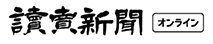

雑菌だってこだわりたい、
そんなあなたのためにb-browは誕生しました。

ABOUT
- 商品の構成要素
- 次世代の除菌成分、ポリヘキサニドって何？

b-browはポリへキサドニという成分を使用しています ポリへキサドニとは、コンタクトレンズの保存液やウエット ティッシュにも使われている除菌効果の高い安全な成分のこと
アルコールや次亜鉛素酸水より注目される秘密は？

よくある除菌だと、においがきつかったり手が荒れて しまうことはありませんか？ ポリへキサドニはほとんど無臭なのでアルコールなどの 独特のにおいが苦手な方でも安心して使えますし、 肌の影響も少ないので人を選ばずにご利用いただけます。
b-browが得ればれる4つの理由

01 高い安全性
- 化粧品にも使われている成分を使用しているため、
- お肌が弱い方、お子様にも安心して使用することができます。
- 無色・無臭でありほとんど皮膚刺激がなくてとても扱い
- やすい雑菌です。
刺激がなく安全と感じましたか?


02 消臭効果が長続き
- 優れた包摂力を生かして、、臭いが取り込み酸化・分解
- して消臭します
- 乾いても繊維や硬質表面に残って消臭効果が長続きします。
消臭効果の維持を実感できましたか？


03 水に濡れても落ちにくい
- 水やお湯でも揮発することなく効果を発揮します。
- ご自宅の浴槽水や洗面所・キッチンなどの水回り
- にもご利用いただけます。
水回りのイヤな臭いは
消えましたか？


04 素材に優しい
- 色落ちや金属部分の腐食が気になるお洋服や、普段
- 消毒したくてもなかなか出来ない鞄など、アルコールや
- 次亜塩素酸では使い辛い素材でも使用ができます。
素材が傷むなどトラブルは
ありませんでしたか？


CUSTOMER REVIEWS
お客さまの声
"安心して子供にも使えます”！

- 今まではアルコールで消毒していましたが消毒していましたが、子供がいるため部屋全体に
- 吹きかけたり、子供の手に直接使うことができませんでした。
- 子供にも害のない成分を使っているので友人に聞いたので愛用しています。
- 気づ至らなくなっていたので、詰め替え用も買いました。
31歳 （女性）
"低刺激だから重宝しています。"

- 仕事柄、お客様と接する機会が多いため常に持ち歩いています。
- 今までアルコール消毒だと手荒れがひどいのが悩みでしたが、今は全く気に
- ならなくなったので、本当にかってよかったなと思っています。
36歳 （男性）
"アルコールの臭いが苦手な私でも使える！"

- アルコール特有のきつい臭いが苦手で、今まではこまめに手洗いをして
- 感染症対策をしていました。
- 使ってみると全然臭いもしないし、使っていてとても安心感があります。
- 自宅用に一本と、持ち運び用に一本づつこ移入させていただきました。
52歳 （女性）
”持ち運びやすいサイズとデザインです。”

- 外出するときは、肌身離さずに持ち歩いています！電車に乗った後や、
- 食事をする前に使っていて、キツイ臭いも全然しないのでとっても重宝しています。
- カバンにもすっぽり収まる大きさで、ボトルのデザインもシンプルなので周りの目も
- 全然気になりません。
28歳 （女性）
PRODUCTS
商品紹介

b-brow 除菌ミストスプレー
希望小売価格 100ml/800（税抜）300ml/1600円（税抜）
- <"ポリへキサニドの特徴">
- 他の防腐・雑菌剤と比較して多種類の殺菌に有効性
- が高く（抗菌スペクトルが広い）、低濃度で除菌作
- 用を発揮します。また、酵母やカビ（真菌類）にも
- 効果があり、さらにアルコールでは除菌できないノ
- ロウイルスにも効果が高いことが知られています。
- 新型コロナウイルスと同じ型のウイルスにも有効と
- いうことも証明されました。

b-brow 詰め替え用ボトル
希望小売価格 1000ml/2500円（税抜）
- 手指の除菌以外にも、お子様のおもちゃの雑菌や、
- 衣服や鞄などの布の除菌など、様々な場面で
- 活躍するb-browは、一般的な除菌剤より減る
- スピードが早く、「気づいたらすぐなくなってしま
- う」という声をいただきました。そんな方の為に、
- お得な詰め替え用のボトルをご用意。使いたい時に切
- らしていた・・・とならないように、是非お買い求めく
- ださい。
定期配送フォーム追加

FREQUENTRYASKEDQUESTIONS
よくある質問
ポリヘキサニドとはなんですか？
- 除菌効果が高く、安全な成分です。
- 食品加工工場や酒類製造で除菌洗浄用、公衆浴場や温泉及びやレジャー施設でお湯や水の除菌用、コンタクトレンズ
- の保存液、ウェットティッシュの雑菌剤などに使用されています。
どのような物に使えますか
- マスク・タオル・ふきん・調理台・テーブル・床・壁・キッチン周り・冷蔵庫の中・風呂場・玄関・布製品・靴・
- ベット周り・おもちゃなどの生活用品全般に使用できます。
使用方法を教えてください。
- 手指に使用する場合は3プッシュ程度吹きかけて、両掌や指の間にしっかりすりこんでください。
- マスクへ使用する場合は、内面・外面の外側に３〜５プッシュしてください
どのようなウイルスに効果がありますか？
保存方法について教えてください。
誤って飲み込んでしまった場合は？
- 目に入った場合や飲み込んだ場合は充分洗い、本品を持参し医師の診察を受けてください。


